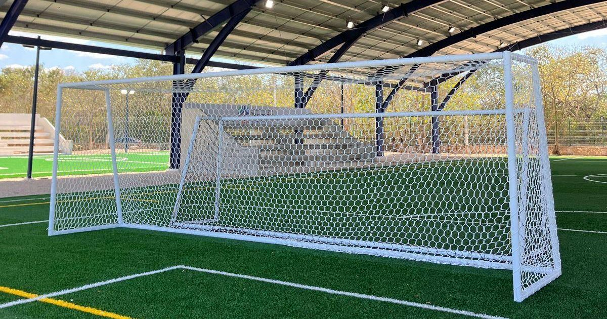
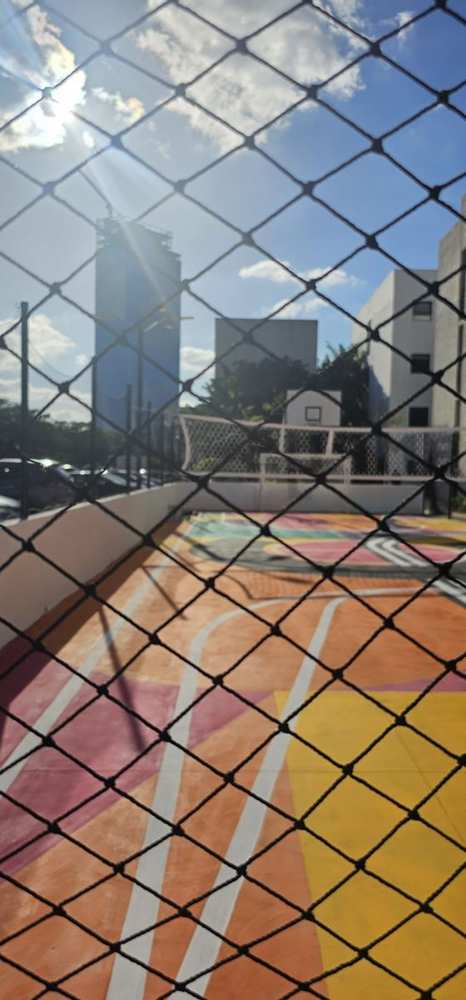
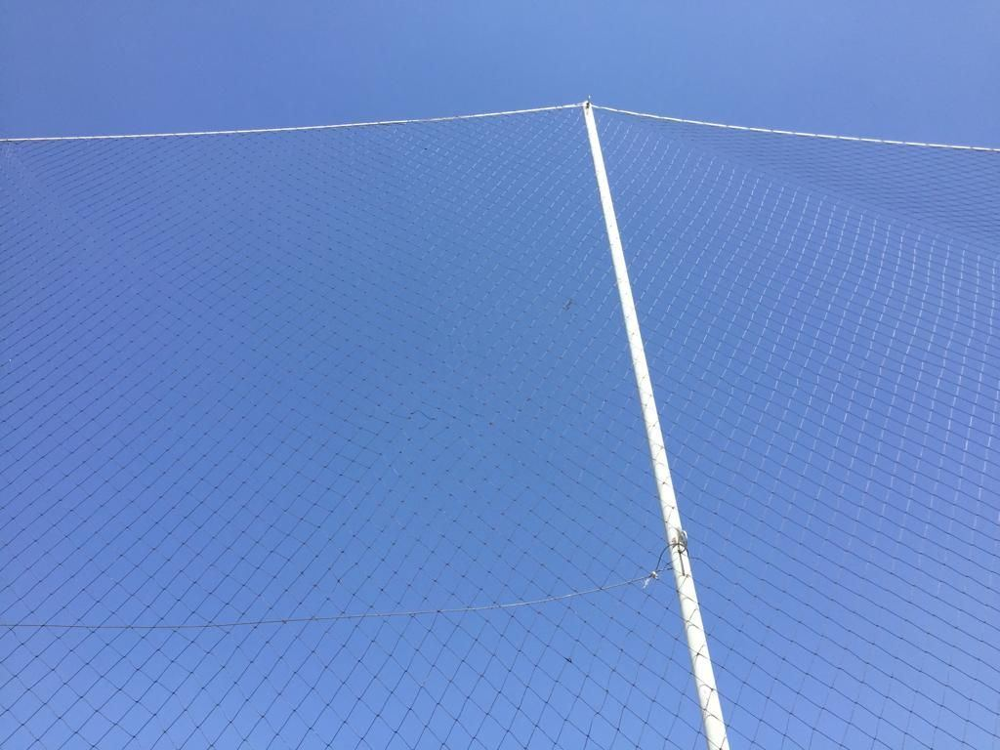

La red está instalada y cumple su función. ¿Cuándo fue la última vez que alguien revisó sus bordes, uniones y amarres?
En una cancha el mantenimiento suele ir al piso, la pintura o las porterías, pero las redes también lo necesitan. Encontrar a tiempo un cordón cortado o un amarre flojo evita que el daño crezca.
1. Ten a la mano los datos de tu red
Guarda el material, el tipo de tejido, la fecha de instalación, las medidas y la cotización. Te ahorrará tiempo cuando necesites una reparación o un reemplazo.
- Redes perimetrales de Grupo RC: nylon alquitranado calibre 18, negras, con contorno de piola blanca.
- Redes de portería de Grupo RC: poliéster trenzado de 60 filamentos, tejido hexagonal tipo colmena.
Una red de portería y una perimetral cumplen funciones distintas: no se revisan ni duran igual.
2. Revisa la red y lo que la sostiene
Recorre la instalación desde un lugar seguro y mira la continuidad del tejido, las uniones entre paños, los amarres y el cierre de abajo. Pon atención en los puntos donde la red roza metal o recibe más balonazos.

| Lo que ves | Qué revisar |
|---|---|
| Hueco o cordón cortado | Tamaño del daño y estado de los cordones de alrededor. |
| Red caída o deformada | Amarres, soportes y separación entre fijaciones. |
| Desgaste junto al tubo o al cable | Rebabas, bordes filosos y roce constante. |
| Roturas en varias zonas | Posible desgaste general: valora el reemplazo. |
En porterías revisa también que las fijaciones no tengan bordes que corten la red o lastimen a los jugadores.
3. Limpia con suavidad y solo cuando haga falta
Usa agua y jabón neutro, enjuaga y deja secar al aire y a la sombra. No talles con fuerza ni uses hidrolavadora, y no aceleres el secado con calor.
No uses cloro, solventes ni productos agresivos: pueden debilitar las fibras o dañar el acabado de la red aunque no se note a simple vista. Lavarla más no la conserva mejor.
4. Corrige primero la causa del roce
Un borde filoso sigue dañando la red aunque repares el cordón. Atiende la causa: el contacto con metal, un amarre mal repartido o el arrastre sobre un piso áspero.

Ajusta la red según su función: una perimetral se tensa según sus soportes y una red de portería necesita su holgura para recibir el balón. No corrijas una medida corta estirándola al límite.
5. Si la retiras, cuida cómo la quitas
Suelta los amarres sin jalar el tejido, recógela por secciones para que no se enrede y marca su orientación. Guárdala seca, lejos del sol y de objetos cortantes, con sus accesorios aparte.
Quitarla reduce el tiempo al sol, pero los jalones y el arrastre al montarla y desmontarla también la desgastan. Elige una forma de manejarla que tu equipo pueda repetir sin prisas.
Después de viento fuerte o de un incidente
Haz una revisión extra si cae una rama, un vehículo toca la red, alguien se cuelga de ella o el viento la mueve. Si ves un poste desplazado o un soporte dañado, cierra esa zona hasta que se revise. Los ajustes en altura los hace personal con el equipo adecuado.
¿Reparar o reemplazar?
Un parche tiene sentido cuando el daño es localizado y la red de alrededor está sana. Conviene reemplazar cuando hay roturas repetidas, desgaste en varios puntos, cordón quebradizo o daños que vuelven a salir. Un parche cierra un hueco, pero no le devuelve resistencia a toda la red.

Para las redes de portería de Grupo RC con uso intenso y expuestas al sol y a la intemperie, recomendamos el cambio preventivo cada tres años aunque se vean enteras. En canchas techadas o de uso ocasional el criterio cambia según su estado. Lo explico a detalle en ¿cuánto dura una red para portería?
Un calendario sencillo
| Cuándo | Qué hacer |
|---|---|
| Antes de cada jornada | Buscar huecos, amarres sueltos y obstáculos. |
| Cada mes | Revisar tejido, uniones, roces y ajustes pendientes, y anotarlo. |
| Después de un incidente | Revisar la zona afectada antes de volver a usarla. |
| Cuando aparece un daño | Valorar si basta un parche o ya toca reemplazarla. |
Es una rutina propuesta, no un plazo obligatorio: ajústala si la cancha se usa muchas horas, está al aire libre o ya ha tenido daños.
Lleva una bitácora de una hoja
Anota fecha, lugar, tipo de red, lo que encontraste, una foto, qué se hizo y quién lo hizo. Con ese historial es más fácil presupuestar el mantenimiento y saber cuándo toca el reemplazo.
¿Tu red ya muestra desgaste en varias zonas? Mándanos fotos y medidas y te cotizamos el reemplazo a la medida.
Las recomendaciones de este artículo corresponden al criterio de Reinier Coral, de Redes Deportivas RC.